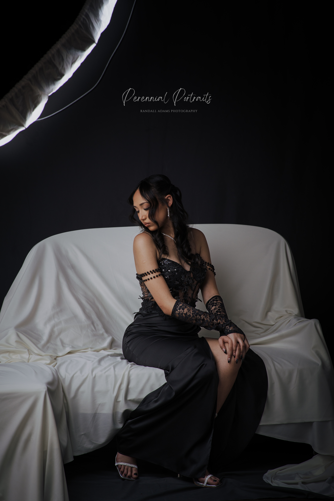

Sometimes, when you spend time editing photographs and sharing them with the world, certain images get lost among the many others.
Not because they are less meaningful, but because there is always another photograph to edit, another gallery to deliver, and another moment waiting to be shared. Every now and then, it is worth slowing down and looking again.
This portrait of Emme brought me back to one of the things I appreciate most about photography: the unexpected beauty of collaboration.
I had an idea of how I wanted her to sit. I showed Emme what I had in mind, and she settled into the pose. But she didn't simply follow my direction. She brought her own personality to it, adding something that made the moment feel natural and uniquely hers.
That is the part of portrait photography that cannot always be planned.
You can imagine the composition, consider the light, and have a clear idea of what you want to create. But the person standing in front of your camera brings something of their own. A little individuality, a natural expression, a subtle change in posture. Sometimes, those small details are what bring the entire photograph together.
For me, the process is never only about asking someone to stand or sit in a particular way. It is about creating an image together, allowing room for the person being photographed to contribute something that belongs entirely to them.
Looking back at this portrait reminded me of that.
I wanted to share it separately, giving the photograph and the moment behind it a little more room to breathe. Not to place it above other images, but to tell a story that might otherwise have remained quietly tucked away among hundreds of photographs.
Every portrait has its own meaning. Every person brings something different to the camera, and every session holds moments that deserve to be remembered.
Sometimes, we simply need to pause long enough to notice them.
Because photography is not only about capturing moments. It is also about returning to them, remembering how they came together, and appreciating the stories they continue to tell.